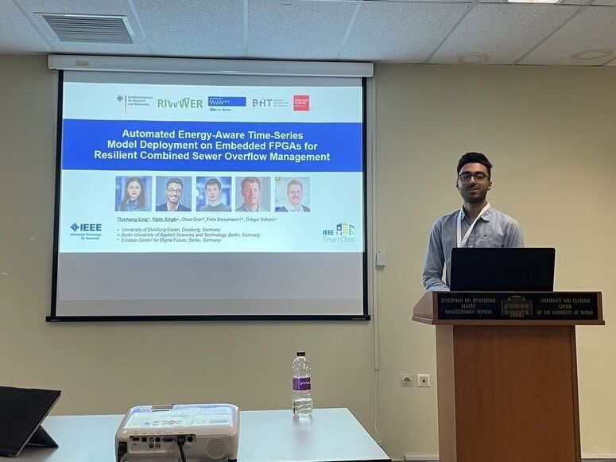

News ·
Presented our FPGA deployment paper at IEEE ISC2 2025 in Patras



Last week, I had the opportunity to participate in the 11th IEEE International Smart Cities Conference (ISC2 2025, https://isc2-2025.org/), held in Patras, Greece — an inspiring event with insightful keynotes and discussions on how our future in urban communities is being shaped.
There I presented our latest research as part of the RIWWER project. Our publication, „Automated Energy-Aware Time-Series Model Deployment on Embedded FPGAs for Resilient Combined Sewer Overflow Management“, demonstrates how resilient and energy-efficient machine learning models can be deployed on small edge devices — with even less computational power than the average smartphone.
This research supports municipalities in making our urban water infrastructure more resilient to the intensifying impacts of climate change.
This work has been a collaborative effort with my co-authors and supervisors, a huge thanks goes to Tianheng Ling, Chao Qian, Felix Biessmann and Gregor Schiele.